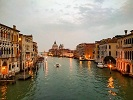

Veneza
Introdução|
Localização|
Multimédia|
Informações|
Quizz|
Comentários|
HTML|
Home
Multimédia

Foto do Canal de Veneza
[1]
Foto de Veneza
[1]
Vídeo de Veneza:
Veneza II
Aleksandr Blok
Pelas lagunas, frio vento.
Gôndolas – mudas tumbas.
Esta noite, jovem e doente,
Sob a coluna do leão sucumbes.
Na torre, com uma canção de chumbo,
Os gigantes dão a hora noturna.
Na laguna lunar Marcos mergulha
Sua iconóstase soturna.
Nas sombras das galerias dos palácios,
À palidez da lua – passos.
Salomé, esgueirando-se, passeia
Minha cabeça em sangue nos seus braços.
Tudo dorme – palácios, canais, gente.
Só o passo deslizante da princesa
Só – sobre o peito negro – uma cabeça
Contempla a treva em torno com tristeza.
[1]
Desenho criativo:
Carnaval de Venenza
Há algo mais típico de Veneza do que uma gôndola?
Introdução
Localização
Multimédia
Informação
Quizz
Comentários